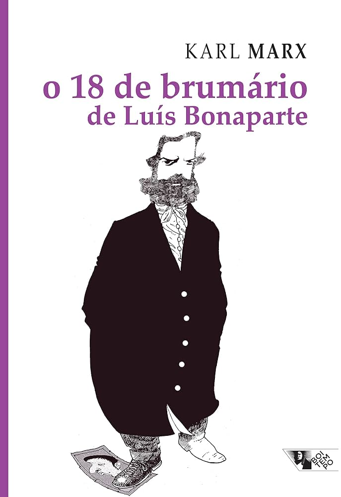
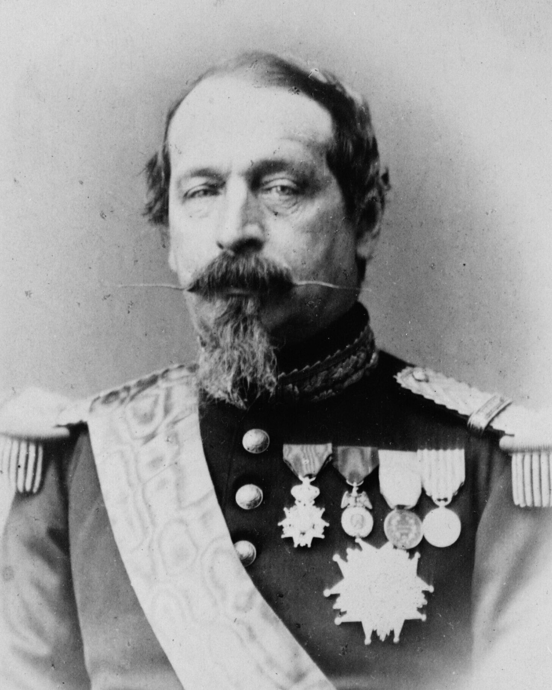

Uma resenha para a formação política da organização
Ficha do livro
|
 |
Escrito a quente entre 1851 e 1852, O 18 de Brumário de Luís Bonaparte analisa como um aventureiro medíocre, sobrinho de Napoleão, conseguiu tomar o poder na França por meio de um golpe de Estado em 2 de dezembro de 1851. Marx não trata o episódio como obra de um grande homem, mas como resultado necessário da luta entre as classes sociais durante a Segunda República Francesa, no período de 1848 a 1851.
A obra abre com uma das frases mais citadas de toda a teoria política: a história ocorre duas vezes, a primeira como tragédia e a segunda como farsa. A partir dessa chave, os sete capítulos reconstroem, passo a passo, como cada classe que subiu ao palco revolucionário se revelou incapaz de conduzir a sociedade, abrindo espaço para o poder pessoal de Bonaparte.
A lista abaixo segue a ordem em que os assuntos aparecem no livro, por isso usa uma lista ordenada.
A ordem dos itens abaixo não altera o sentido, por isso é uma lista não ordenada.
O trecho mais célebre do livro mostra que cada instrumento de repressão criado pela burguesia acabou voltado contra ela mesma por Bonaparte. A tabela resume alguns desses espelhos.
| O que a burguesia aplicou | O que voltou contra ela |
|---|---|
| Destruiu a imprensa revolucionária | Sua própria imprensa foi destruída |
| Dissolveu as Guardas Nacionais democráticas | Sua própria Guarda Nacional foi dissolvida |
| Decretou o estado de sítio | O estado de sítio foi decretado sobre ela |
| Substituiu os júris por comissões militares | Seus próprios júris foram substituídos por comissões militares |
| Deportou sem julgamento | Foi deportada sem julgamento |
O 18 de Brumário é, ao mesmo tempo, história, teoria política e panfleto. Sua força está em unir a narrativa dos acontecimentos concretos a uma explicação estrutural: o poder de Bonaparte nasce do vazio deixado por classes que não podiam governar.
Pontos altos da leitura:
Ponto de atenção para o leitor iniciante:
Recomendado para estudantes de história, ciência política, filosofia e para quem deseja entender como se analisa um acontecimento político a partir das relações de classe.
Retrato de Luís Bonaparte, que se tornaria Napoleão III após o golpe.

Você pode consultar a página da editora e um verbete de referência sobre a obra. Os links abaixo abrem em uma nova aba do navegador.
Esta página foi construída como exercício da Aula 2 — Introdução ao HTML.
Ela utiliza apenas as tags estudadas em aula, sem folhas de estilo.
O objetivo é praticar a estrutura de um documento HTML com conteúdo real.